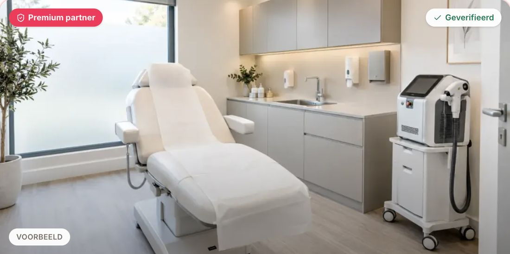

Kennismakingsgesprekken inplannen voor BeautyInfo
Je belt huidklinieken en schoonheidssalons. Je maakt ze nieuwsgierig en je plant een kort videogesprek met een closer. De closer laat het profiel zien en rondt de aanmelding af.
1Wat is BeautyInfo
Weet waar je voor belt. Dan klink je zeker.
BeautyInfo.nl is een onafhankelijke vergelijkingssite voor huidtherapie in Nederland. Mensen zoeken er een kliniek in hun buurt voor een behandeling. Ze kunnen filteren op behandeling, BIG-registratie en vergoeding.
Ze vinden snel een goede kliniek in de buurt en kunnen klinieken vergelijken.
Nieuwe klanten uit hun regio, die doorgestuurd worden naar hun eigen boekingslink.
Huidklinieken, huidtherapeuten en schoonheidssalons. Vraag naar de eigenaar.
Kijk voor je eerste belronde zelf even rond op beautyinfo.nl. Dan weet je wat de kliniek straks ziet.
2Het aanbod
Ken dit uit je hoofd. Dit is wat je verkoopt.
- Alle prijzen zijn zonder btw.
- De kliniek betaalt vooraf: in een keer, of in 3 delen via Klarna. Betalen kan met iDEAL, creditcard of Klarna.
- Er is geen maandabonnement.
- Niets wordt automatisch verlengd. Voor het einde krijgt de kliniek een betaallink. Verlengen na 1 jaar kost €450.
- Het profiel staat direct na betalen live. Foto's en tekst zijn binnen een paar werkdagen klaar.
Dit krijgt de kliniek
- Bovenaan in hun stad en behandelcategorie
- Als eerste in artikelen en op de kaart
- Een profiel met foto's, video en knoppen: bellen, WhatsApp en afspraak aanvragen
- Links naar hun Instagram en TikTok
- Een dashboard met bezoeken en klikken op bellen, boeken en website
- Geen andere klinieken op hun profiel, en het label Geverifieerd
- Geen commissie: wat klanten betalen, blijft van de kliniek
Zo staat de kliniek straks in de zoekresultaten
Dit is het voorbeeld dat de kliniek ook ziet op de aanmeldpagina. Gebruik het in je gesprek: "U staat straks bovenaan, met foto's en een knop om direct te boeken. De andere klinieken staan eronder zonder foto."
Voorbeeld

Het verschil in een zin: Premium staat bovenaan met foto's, behandelingen, het label Geverifieerd en knoppen om te boeken of te bellen. Een gratis vermelding heeft dat allemaal niet.
- Bovenaan in hun categorie en stad
- Een dashboard: ze zien zelf hoeveel mensen kijken en klikken
- Geen commissie: wat ze verdienen, blijft van hen
3Het gesprek
Het script in 7 stappen. Dit staat ook in het belscherm onder Belscript.
Opening stap 1
"Top, fijn dat ik je tref. Ik hou het kort."
Heb je niet de eigenaar aan de lijn? Vraag wanneer die er is en plan een terugbelafspraak.
Reden van bellen stap 2
Laat ze zelf rekenen stap 3
Wat kost een behandeling bij jou?"
Laat ze antwoorden. Wacht even.
Geen getallen beloven. De klant rekent zelf, en dat overtuigt meer.
Aanbod in het kort stap 4
Hou het kort. De closer legt het aanbod in het gesprek uit.
Naar het gesprek stap 5
Geef altijd twee keuzes. Kijk eerst in de agenda welke tijden vrij zijn (hoofdstuk 4).
Gegevens checken stap 6
- "Op welk e-mailadres wil je de uitnodiging?" Spel het terug, letter voor letter. Daar komt de videolink.
- "Wat is je voor- en achternaam?"
- "Jullie zitten in [plaats], toch?"
Bevestigen en afsluiten stap 7
Zet in de notitie wat de klant vertelde, bijvoorbeeld "wil meer klanten voor laserontharing, heeft al Treatwell". Dat leest de closer voor het gesprek.
4Het gesprek inplannen
Er zijn twee soorten closers. Je manager zegt welke route je gebruikt. Weet je het niet? Vraag het voor je eerste belronde.
Route A: closer van BeautyInfo
- Klik in het belscherm op GESPREK INPLANNEN.
- Kies een dag en een vrije tijd.
- Klik op inplannen. BeautyInfo kiest de closer en stuurt de klant de uitnodiging met de videolink.
De lead staat daarna vanzelf op Afspraak gemaakt, op jouw naam. Je hoeft niet meer af te boeken. Het belscherm gaat door naar de volgende lead.
Zie je geen tijden? Plan een terugbelafspraak en meld het aan je manager.
Route B: een eigen accountmanager
- Klik in het belscherm op AFSPRAAK GEMAAKT.
- Kies bij soort afspraak Videocall (30 minuten).
- Klik op Zet in agenda en kies de accountmanager.
- Kies een vrij moment (grijs = bezet) en klik op Bevestig dit moment.
- Vul contactpersoon en sentiment in en boek af.
De accountmanager ziet het gesprek meteen in zijn agenda en zet de videolink klaar.
5Wat er daarna gebeurt
Bij de lead zie je hoe het gesprek loopt. Kijk bij Leads, project BEAUTYINFO.
Het gesprek staat in de agenda. Je ziet datum, tijd en de closer.
De klant of closer heeft een nieuwe tijd gekozen. Het telt nog steeds voor jou.
De klant kwam niet. De lead komt terug om te bellen. Bel en plan een nieuw moment.
Het gesprek gaat niet door. De lead komt terug om te bellen.
Signalen
- No-show Bel de klant dezelfde dag nog. Vraag wat er gebeurde en plan een nieuw gesprek.
- Nu op de pagina De klant kijkt nu op BeautyInfo. Goed moment om te bellen.
Plant de klant zelf een gesprek via een mail van jou? Dan telt het ook als jouw afspraak.
6Lukt het niet nu?
Geen tijd, of moet eerst overleggen? Dan plan je een vast moment om terug te bellen.
Geef twee keuzes. Dan kiest de klant een moment in plaats van "ik bel je wel".
- Boek af op TBA (TERUGBEL) met de afgesproken datum en tijd.
- Zet in de notitie wat de klant zei, bijvoorbeeld "overlegt met partner, interesse in profiel".
7Bezwaren
Een bezwaar is meestal een vraag. Klik er een open voor het antwoord.
"Ik heb geen tijd."
"Stuur maar wat informatie."
"Ik wil geen verkoopgesprek."
"Te duur."
"Kan ik per maand betalen?"
"Ik heb al Treatwell" of "Ik heb genoeg klanten."
Zeg niets over wat Treatwell kost. Dat weet de klant zelf beter.
"Nooit van BeautyInfo gehoord."
"Ik moet overleggen met mijn partner."
Lukt dat niet, plan een terugbelafspraak (hoofdstuk 6).
"Ik wil niet vastzitten aan een abonnement."
"Bel me niet meer."
Zeg sorry, rond het gesprek netjes af en boek af op BLACKLIST. Dan wordt de kliniek niet meer gebeld en stoppen ook de mails. Niet overhalen.
8Regels
Hier houd je je altijd aan. Ook als het gesprek goed loopt.
Check eerst even het bedrijf. Zoek het kort op internet: rechtsvorm, website en of het klopt.
Altijd de echte prijs noemen: 350 euro voor 1 jaar (was 450) of 600 euro voor 2 jaar, zonder btw.
Pas inplannen als de klant ja zegt tegen een dag en tijd.
Geen aantal boekingen beloven. Laat de klant zelf rekenen.
Geen prijs per maand noemen. Er is geen maandabonnement.
Niet doordrukken als iemand nee zegt of vraagt om niet meer te bellen.